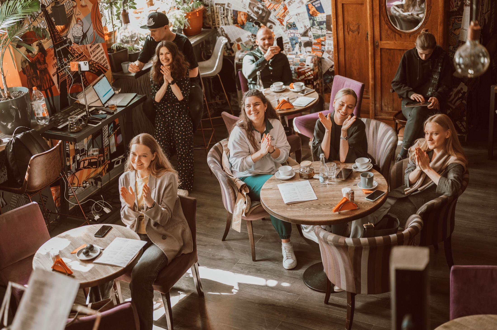

Slow Down, Savor,
& Connect.
Housed inside Avant Garden in historic Anoka, Metta Coffee was built as a quiet intersection of artisan craft, micro-batch roasting, and neighborhood collaboration.

The
Story
Behind
the
Cup
In Pali, ‘Metta’ translates to loving-kindness—an intentional practice of goodwill toward oneself and the surrounding community. Started by the mother-daughter duo Amber and Amanda in June 2020, Metta Coffee was born from a passion for small-batch roasting and deep neighborhood connection.
Housed inside Avant Garden in historic Anoka, our space is designed to be an active community ecosystem where coffee, art, and local creativity intersect daily. Every bag of coffee is handled in small micro-batches—with beans roasted by Amber using the mindful meditative practices she began in 2014. But what truly sets Metta apart isn't just how we roast; it's who we share the space with. By partnering with independent artists, regional makers, and creative event hosts for weekend pop-ups, workshops, and product showcases, we provide an accessible physical platform for our community to gather, share, and grow together.
-
Micro-Batch Roasting
Roasted with intention, every batch is dialed in to highlight exceptional flavor profiles and origins.
Whether you're stopping by for a single-origin pour-over, browsing our retail maker shelves, or exploring our upcoming event calendar, there’s always a seat saved for you.